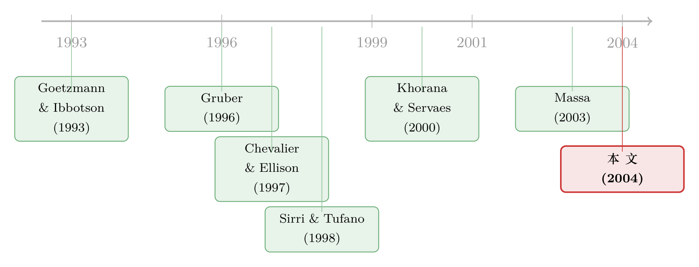

一只基金的命运，藏在它「兄弟姐妹」的成绩单里
本文读的是 Nanda, Wang & Zheng (2004, Review of Financial Studies)：一只基金能吸引多少新钱，不只取决于它自己跑得好不好，还取决于它「家里」有没有冒出一只明星——明星基金会把资金外溢给整个家族；而正因为有这层外溢，能力较弱的家族反而有动机刻意去「制造明星」（拉大旗下基金的策略离散度），代价是整个家族的平均业绩更差。
1 一个被忽略了很久的常识
先说一个几乎所有人都知道、却几乎没人认真对待的事实：绝大多数共同基金，都不是一个人在战斗。
论文一开篇就给了个数字——超过 80% 的美国共同基金隶属于某个基金家族 (fund family)，平均一个家族管着差不多七只分散化的股票型基金。富达 (Fidelity)、先锋 (Vanguard) 旗下成百上千只基金，共用一套销售渠道、一块招牌、一个后台。这本是再寻常不过的产业组织形态。
可奇怪的是，长期以来的学术研究，几乎都把基金当成一个个孤立的个体来分析：它的业绩、它的资金流、它的风险选择，仿佛都与隔壁那只挂着同一个姓氏的基金毫无关系。
这篇文章想问的，正是这个被绕过去的问题：如果同一个家族里的基金之间存在「外溢」（spillover），会怎样？ 比如，旁边那只基金一炮而红，会不会把新钱也带到「我」这只平平无奇的基金头上来？
这个问题听起来像是个无伤大雅的细节。但作者很快会让你看到，一旦把「家族」这层结构补回来，我们对基金行业的很多判断——尤其是「明星基金到底意味着什么」——都要重写。
2 凸性，是这一切的引擎
要理解整篇文章，得先抓住一个老概念：投资者对业绩的反应是不对称的。
这是基金研究里被反复验证的「定型事实」（Ippolito 1992；Chevalier and Ellison 1997；Sirri and Tufano 1998）：一只基金业绩好，会吸引到不成比例的新钱涌入；可一旦业绩差，资金外流却远没有那么猛烈。把「资金流」对「业绩」画出来，你会得到一条凸 (convex)的曲线——它长得像一份看涨期权 (call option) 的损益图。
凸性意味着什么？意味着「博一把极端的好成绩」是有正期权价值的：赌赢了，新钱滚滚而来；赌输了，损失有限。这就埋下了第一颗种子。
凸的资金流—业绩关系，是这篇文章所有「策略性行为」的根源。请记住它：好成绩的回报是凸的，所以「制造一个极端」本身就值钱。
接着，一个自然的问题是：如果再把「家族」这层结构叠上去呢？
如果一只明星基金不仅能给自己拉来钱，还能通过家族的品牌、广告、交叉销售，把钱外溢给同门的其它基金，那么这份「看涨期权」的价值就被进一步放大了。家族越大，一只明星能照亮的「兄弟姐妹」越多，这份期权就越值钱。
然后，真正关键的一步反转出现了：既然制造明星这么划算，谁最有动机去做这件事？作者的猜想相当犀利——恰恰是那些能力较弱的家族。 能力强的家族，本就该靠扎实的选股和信息优势赚钱，犯不着去赌极端；而能力弱的家族，与其老老实实地平庸下去，不如主动加大旗下基金之间的「策略离散度」，去博一只明星出来，靠外溢效应把整个家族的盘子做大。
于是全文的故事线就立住了：明星外溢 → 制造明星有利可图 → 弱者更有动机去赌 → 高离散度家族平均业绩反而更差。 下面要做的，就是把这条链条上的每一环用数据钉死。
3 怎么把「制造明星的策略」量出来
这篇文章最聪明的地方，不在回归本身，而在它怎样把一个抽象的「策略」变成一个可观测的数字。
数据来自 CRSP 的共同基金数据库，样本是 1992 年 1 月到 1998 年 12 月之间所有分散化的美国股票型基金（剔除行业基金、国际基金、平衡型基金），之所以从 1991 年后取样，是因为这之后 CRSP 才有「家族身份」的信息。观测单位是「基金—月」与「家族—月」。
第一步，定义什么叫「明星」。 对每只基金，先用 Fama and French (1993) 三因子模型估出因子载荷和超额收益：
$$ R_{it}-RF_t = a_i + b_{i,RMRF}\,RMRF_t + b_{i,SMB}\,SMB_t + b_{i,HML}\,HML_t + e_{it} $$
再把截距与残差合成「三因子调整收益」（three-factor adjusted return）：
$$ \hat a_{it} = a_i + e_{it} $$
然后看过去 12 个月的平均三因子调整收益，排进全样本前 5% 的，就是当月的「明星基金」（star fund）；一个家族只要旗下有至少一只明星，它就是「明星家族」（star family）。作为稳健性，作者还用了 CAPM 单因子、Carhart (1997) 四因子、原始收益等多种调整方式。
第二步，也是全文的灵魂——用什么来代理「家族选择的策略」？作者的答案是：家族内部各基金之间的收益标准差（cross-fund return standard deviation）：
$$ (\text{Cross-fund std. dev.})_{ft} = \sqrt{\frac{1}{n-1}\sum_{i=1}^{n}\left(\hat a_{it}-\bar a_{ft}\right)^2} $$
这个数字的含义非常直观：它衡量同一个家族里，各只基金的「下注」有多分散。如果一个家族让旗下基金各押各的赛道、风格南辕北辙，这个标准差就高；如果家族在内部共享信息、统一打法，让大家步调一致，这个标准差就低。离散度高，等于主动把「出一个极端值」的概率拉了上去。 这正是「制造明星」最干净的操作变量。
第三步，定义资金流。 「新钱」（new money）是 TNA 的变化中扣掉价格涨跌之后的那部分：
$$ \text{New money}_{it} = TNA_{it} - TNA_{i,t-1}\,(1+R_{it}) $$
再除以期初规模得到「新钱增长率」（new money growth），家族层面则是把成员基金加总。至此，「外溢」「策略」「资金流」三件东西，全部被翻译成了可以丢进面板回归的数字。
作者还额外用了一套业内最有名的明星定义作对照——晨星五星基金 (Morningstar five-star funds，下称 MS 明星)。由于拿不到全样本期的真实评级，他们按晨星公布的方法做了复刻，并抽查了 1995 年 5 月：自己算出 76 只五星基金，晨星公布 81 只，重合 67 只——还原得相当接近。
4 主要结果：明星确实「照亮」全家
先看那张描述性的家族画像（论文表 1、表 2）。样本期里基金家族数量从 1992 年的 178 个涨到 1998 年的 278 个；平均每个家族管的基金数从 3.88 只涨到 6.83 只；家族平均 TNA 从 $1,638 百万涨到 $4,121 百万，近乎翻了三倍。这是一个家族越做越大的年代。
而明星家族长什么样？1998 年，一个平均的明星家族管着 超过 10 只 成员基金，远高于全样本的 6.83 只；它们的跨基金收益标准差平均 1.73%，也高于全样本的 1.47%。初步的相关性已经很清楚：基金更多、内部离散度更高的家族，更容易冒出明星。
接着是核心的外溢检验。作者用带家族固定效应的面板回归，在控制了家族过去业绩等变量之后，比较明星家族与非明星家族的新钱增长。结论是：明星家族的新钱增长显著高于无明星的家族。 而且量级惊人——相比一只「单飞」的明星基金，身处一个七只基金家族里的同一只明星，带来的总现金流增量要大三倍以上。 这与 Khorana and Servaes (2000) 的发现一脉相承：一只明星基金的存在，会显著抬高整个家族的市场份额。
别小看「三倍」这个数。它说的是：明星给「自己」拉来的钱只是冰山一角，真正的大头，是它通过家族外溢给「兄弟姐妹」们带来的钱。这才是家族有动机去制造明星的经济基础。
那么，家族真的能「制造」明星吗？ 作者跑了一个 logistic 回归，用家族特征去预测「下个期间冒出明星」的概率。结果：最稳健地推高造星概率的，正是跨基金收益标准差；基金数量的影响方向也是正的（如预期），但显著性弱一些。有意思的是，加大离散度这招对「长期的 MS 明星」基本不灵——它更擅长制造短期明星。这其实很合逻辑：靠拉大方差博出来的极端值，是短命的运气，撑不起需要三五年业绩的晨星五星。
但真正关键的一步在于最后的反转。 如果高离散度只是「制造明星的策略」，那它应该和投资能力无关、甚至负相关才对。作者用组合方法去验证：把家族按跨基金标准差高低分组，看它们下一年的业绩。结果——无论明星家族还是非明星家族，高标准差组都显著跑输低标准差组。 这就把链条钉死了：那些有效制造明星的策略，恰恰也是与更低平均业绩相伴的策略。一个面向不那么精明的投资者的「造星」打法，对这些投资者其实没半点好处。
顺着这个逻辑还能推一步：天真地「追逐明星家族」能赚钱吗？不能。明星家族在随后期间并没有更高的收益；Blake and Morey (2000) 也发现晨星五星几乎不能预测未来的优异表现。明星，未必是能力的勋章，也可能只是弱者赌出来的一次极端。（关于基金业绩指标本身能不能被「玩弄」，可参见《把「跑分」交给基金经理之前，先问问这个分数能不能被刷》；而家族内部「拉抬净值」的另一种玩法，见《当「拉抬净值」从明星基金经理转移到了他的同事身上》。）
5 模型的核心：一把贝叶斯的尺子
读到这里你可能会反问：那是不是所有明星都不值钱？
不是。文章最精彩的洞见，是用一行贝叶斯更新 (Bayesian updating) 把「哪种明星才真有本事」说清楚了。直觉是这样的：
如果一个家族本来就极容易出明星（高离散度、大体量、ex ante 概率高），那它出了个明星，你几乎学不到任何关于它「能力」的信息——因为它撞上明星太容易了。反过来，如果一个家族本来很难出明星（低离散度、小体量），它居然真出了一只，那这只明星就更可能是「真本事」的信号。
把这件事写成贝叶斯公式。设 \(q\) 是一个家族「有能力」的先验概率，\(p\) 是有能力的家族产生明星的条件概率，\(r\) 是没能力的家族「碰巧」产生明星的概率——而 \(r\)，正是那个由策略和规模决定的 ex ante 造星概率。那么，观察到一只明星之后，「这个家族有能力」的后验概率是：
代入论文footnote 给的数字感受一下。两类家族都有 \(q=1\%\) 的先验能力、\(p=50\%\) 的出星概率：
- 高 ex ante 组（没能力也有 \(r=10\%\) 概率出星）： $$ P=\frac{0.5\times0.01}{0.5\times0.01+0.10\times0.99}\approx \frac{0.005}{0.104}\approx 5\% $$
- 低 ex ante 组（没能力只有 \(r=2\%\) 概率出星）： $$ P=\frac{0.5\times0.01}{0.5\times0.01+0.02\times0.99}\approx \frac{0.005}{0.0248}\approx 20\% $$
同样是「明星家族」，后验能力概率却差了四倍——这就是那把尺子的全部威力。
于是作者做了最后一个组合实验：在明星家族里，再按「跨基金标准差」和「基金数量」切分。预测会怎样？只有「低标准差 + 小规模」的那一类明星家族，才显示出正的超额收益。 其余的明星组合，要么不显著，要么乏善可陈。换句话说，真正有本事的家族，是那些「本不该出明星、却出了明星」的家族。 那些靠拉大方差、堆数量批量制造明星的家族，明星只是它们博出来的烟花。
6 文献脉络
把这篇文章放回它的坐标系里，你会看到一条清晰的演进线。
最早的一支，是关于投资者「追逐过往业绩」的实证。Ippolito (1992)、Gruber (1996)、Sirri and Tufano (1998) 一步步确立了那条凸的资金流—业绩曲线：好业绩被奖以不成比例的资金涌入，坏业绩却不被对称地惩罚。这条凸性，是后面所有故事的物理引擎。
第二支，是「激励如何扭曲基金经理的行为」。Chevalier and Ellison (1997) 发现经理会在年末调整组合风险，去利用那条非线性的资金流曲线；Brown, Harlow, and Starks (1996) 则在「锦标赛」框架下记录了落后者如何操纵风险。（基金内部的风险博弈，另见《「赌一把」未必是加杠杆：当落后的基金经理反手减仓》。）
真正的转折，是研究视角从「单只基金」上移到「整个基金复合体」。Goetzmann and Ibbotson (1993) 最早提出：基金公司可以通过多开基金、压低基金间相关性，来最大化「旗下出现一只榜首基金」的概率——这几乎就是本文的预言。Khorana and Servaes (2000) 提供了关键的实证拼图：明星基金对家族市场份额有强正向的外溢效应。Massa (2003) 则从理论上解释了，正是这种外溢，内生地导致了市场分割与基金的「过度繁殖」。

本文 (2004) 站在哪儿？ 它把前两支的「凸性」与「激励扭曲」，嫁接到第三支的「家族视角」上，第一次系统地论证了：外溢不仅存在，而且会反过来塑造家族的策略选择，并把「明星」这个信号的含金量，按家族的 ex ante 造星概率重新定价。这条线后来一直延伸到今天对基金家族组织形态的研究（如《当「对手」就坐在自家屋檐下：被动基金如何逼着主动基金跑得更快》、《替留下的人作证：基金家族为什么非得「炒掉」几个经理》）。
7 评论与延伸（Q&A + 研究方向）
(a) 几个可能的疑问
Q：「跨基金标准差高」会不会只是因为这个家族本来就在做更激进的投资，而不是刻意去「造星」？
这是最该担心的内生性。作者的应对是「行为后果」的证据：如果高离散度只反映正常的策略差异，它不该系统性地预测更低的下一年业绩。但数据里高标准差组确实显著跑输——这与「为造星而牺牲平均业绩」一致，而较难用「单纯更激进」来解释。当然，这是间接论证，不是干净的外生冲击。
Q：明星家族吸来的新钱，会不会其实是从同门其它基金「拆东墙补西墙」搬过来的？
作者明确意识到了这个「自我蚕食」（cannibalization）的隐忧——如果明星的新钱大多是从兄弟基金挪来的，外溢就是假象。但他们度量的是家族总新钱增长显著为正，且明星家族相对非明星家族多吸金，说明这是净流入而非内部腾挪。
Q：用 Fama-French 三因子前 5% 定义明星，和业内真正用的晨星五星，是一回事吗？
不是。两者在风险调整方法、是否计入申购费、评估期长短上都不同，识别出的明星只是部分重叠。有意思的是，MS 明星给「自己」拉来的钱比因子模型明星更多，但两者在家族内的外溢效应相近，且 MS 明星的影响基本独立于因子明星。这反而增强了「外溢」结论的稳健性。
Q：既然追逐明星家族不赚钱，为什么投资者还前赴后继？
文章的潜台词是行为解释：凸的资金流曲线本身就暗示，很多基金投资者是被广告和「显眼度」驱动的、可能不够精明的小投资者。家族正是利用了这种注意力机制——把明星高调宣传，把平庸默默掩埋。对这群人而言，造星策略恰恰是「对他们没好处」的那一类。
Q：为什么拉大方差能造短期明星，却造不出长期的晨星五星？
因为靠提高横截面离散度博出来的，是一次性的极端运气值——它在 12 个月的窗口里能跳进前 5%，但晨星五星要看 3 至 10 年的加权表现，运气会被时间抹平。这也反过来说明，高离散度策略制造的「明星」，本质上是噪声而非能力。
Q：这套逻辑只适用于股票型基金吗？对债券基金、对外资持有人有没有启示？
论文样本严格限定在分散化美国股票基金（因为三因子模型在别的资产类别上未必合适）。但「凸性 + 外溢 + 信号稀释」的机制是通用的。在固定收益和跨境资金流里，外溢与「造星」很可能以不同形态存在，这恰恰是值得往下挖的方向（见下）。
(b) 几个可能的研究问题与提案
1）债券基金家族里的外溢与「造星」
【经济故事】股票基金的明星靠 alpha，债券基金的「明星」可能靠久期下注或信用下沉——同样能博出短期极端收益，同样能通过家族外溢拉来资金，却可能在信用周期反转时集体爆雷。 【可行性】中。数据上 CRSP/Morningstar 的债基持仓、Lipper 分类都可得；识别可沿用「跨基金收益标准差 → 造星概率 → 后续业绩」的三段式。难点是债基的风险调整模型不像三因子那么标准，需要更细的久期/信用因子。
2）外资资金对「明星外溢」是否更敏感
【经济故事】跨境投资者信息劣势更大、更依赖品牌与评级，理论上对「明星家族」这种显眼度信号的反应应当更强；若如此，造星策略对吸引外资格外有效，也格外有害。 【可行性】中。需要能区分境内外资金流的数据（如部分国家的基金份额登记、或 ICI/EPFR 的跨境流向）。识别上可比较同一家族明星事件前后境内外资金流的弹性差异。
3）被动化浪潮如何改变造星的收益
【经济故事】当越来越多资金流向指数基金，主动「造星」的边际收益是否在衰减？如果资金不再追逐明星，弱能力家族拉大离散度的动机就该减弱。 【可行性】高。用 2004 年至今的长样本，把「家族被动份额占比」作为调节变量，看它是否削弱了「跨基金标准差 → 造星 → 资金流」这条链条。数据现成，识别清晰。
4）造星策略与基金清盘/合并的关系
【经济故事】博方差必然产出大量「狗基金」（dog funds）。家族会不会系统性地清掉失败的赌注、只留下明星，从而在生存偏差上美化记录？ 【可行性】高。CRSP 含已消亡基金，可直接检验高离散度家族是否有更高的基金消亡率，以及消亡与造星是否在时间上配对。
5）流动性视角下的外溢极限
【经济故事】外溢吸来的新钱若涌入同一批底层资产，会推高交易成本、稀释 alpha——家族规模与造星的收益之间可能存在一个被流动性约束的拐点。 【可行性】中。需要把家族层面的资金流映射到底层持仓的流动性（如 Amihud 非流动性），识别「外溢—拥挤—业绩衰减」的链条。数据要求较高但 doable。
8 我的判断
这篇文章的贡献，是把一个被研究者长期忽略的组织事实——基金活在家族里——变成了一个可检验、且有清晰经济含义的命题。它最漂亮的地方有两处：一是用「跨基金收益标准差」这一个变量，把抽象的「家族策略」操作化了；二是用一行贝叶斯更新，把「明星到底值不值钱」从一个含糊的争论，变成了一个取决于 ex ante 概率的、可分组验证的预测。「真正有本事的家族，是那些本不该出明星却出了明星的家族」——这句话，至今仍是看待基金业绩信号最清醒的一把尺子。
但对识别，我有两点保留。其一，跨基金标准差既可能是「刻意造星」，也可能是「家族本就在做异质化的真实投资」，文章靠「后续业绩更差」来间接排除后者，却没有一个外生冲击把「策略」从「能力」里干净地切开——理想的实验，是找一个只改变造星收益、却不改变投资能力的政策变化（比如评级披露规则、广告监管的调整）。其二，整个故事高度依赖那条凸的资金流曲线由「不精明的小投资者」驱动，但样本本身无法直接区分投资者类型；如果机构资金占比在样本期内变化，外溢的强度也可能随之漂移。
我接下来最想看到的，是把这套框架搬到今天：在指数化与 ETF 重塑了资金流之后，「造星」还划不划算？以及搬到别的资产——尤其是公司债与跨境资金——那里的「明星」长什么样、外溢有没有边界。二十年前那只照亮全家的明星，在一个被动资金占了半壁江山的世界里，会不会已经悄悄熄了火？这是这篇经典留给我们最值得追下去的问题。
参考文献
Blake, C., and M. R. Morey (2000). Morningstar Ratings and Mutual Fund Performance. Journal of Financial and Quantitative Analysis 35, 451–481.
Brown, K. C., W. V. Harlow, and L. T. Starks (1996). Of Tournaments and Temptations: An Analysis of Managerial Incentives in the Mutual Fund Industry. Journal of Finance 51, 85–110.
Carhart, M. M. (1997). On Persistence in Mutual Fund Performance. Journal of Finance 52, 57–82.
Chevalier, J., and G. Ellison (1997). Risk Taking by Mutual Funds as a Response to Incentives. Journal of Political Economy 105, 1167–1200.
Fama, E. F., and K. R. French (1993). Common Risk Factors in the Returns on Bonds and Stocks. Journal of Financial Economics 33, 3–53.
Goetzmann, W. N., and R. G. Ibbotson (1993). Games Mutual Fund Companies Play: Strategic Response to Investor Beliefs in the Mutual Fund Industry. Working paper, Yale School of Management.
Gruber, M. J. (1996). Another Puzzle: The Growth in Actively Managed Mutual Funds. Journal of Finance 51, 783–810.
Ippolito, R. A. (1992). Consumer Reaction to Measures of Poor Quality: Evidence from the Mutual Fund Industry. Journal of Law and Economics 35, 45–70.
Khorana, A., and H. Servaes (2000). What Drives Market Share in the Mutual Fund Industry. Working paper, University of Virginia.
Massa, M. (2003). Why So Many Mutual Funds? Mutual Fund Families, Market Segmentation and Financial Performance. Journal of Financial Economics 67, 249–304.
Nanda, V., Z. J. Wang, and L. Zheng (2004). Family Values and the Star Phenomenon: Strategies of Mutual Fund Families. Review of Financial Studies 17(3), 667–698.
Sirri, E., and P. Tufano (1998). Costly Search and Mutual Fund Flows. Journal of Finance 53, 1589–1622.
Zheng, L. (1999). Is Money Smart? A Study of Mutual Fund Investors' Fund Selection Ability. Journal of Finance 54, 901–933.